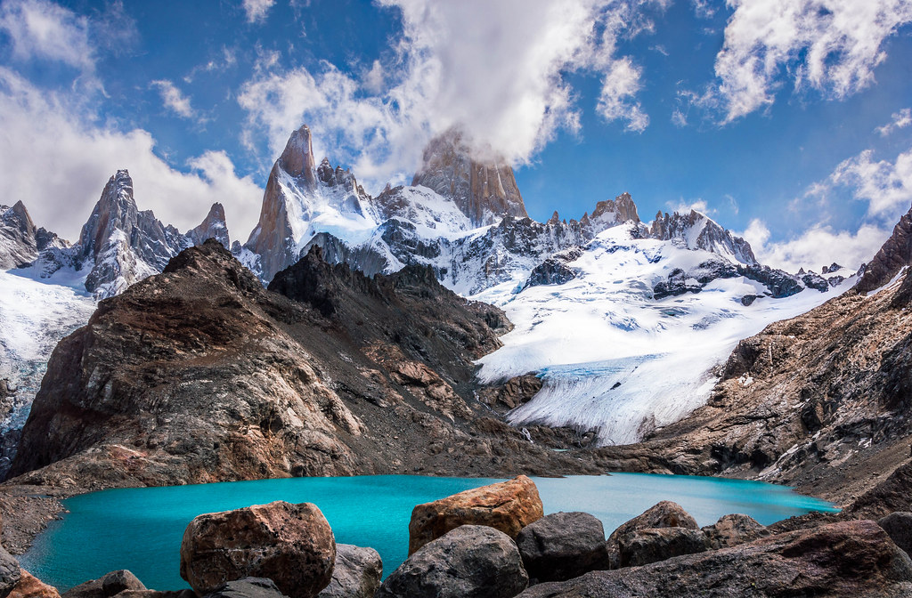
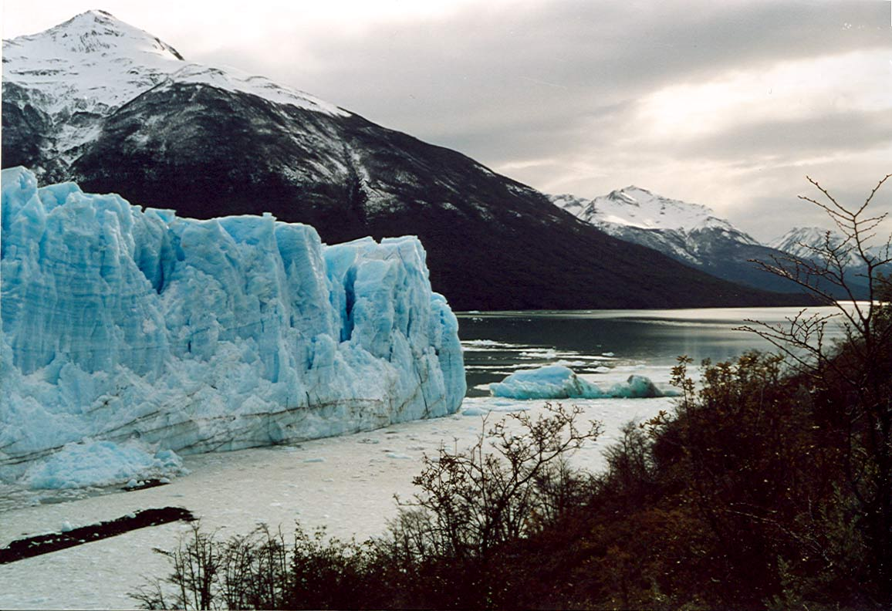
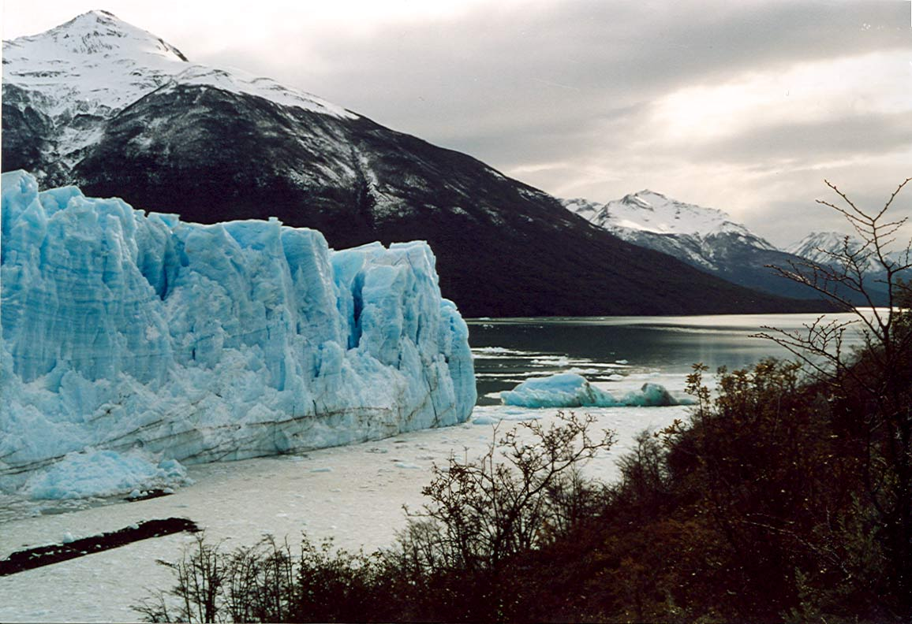
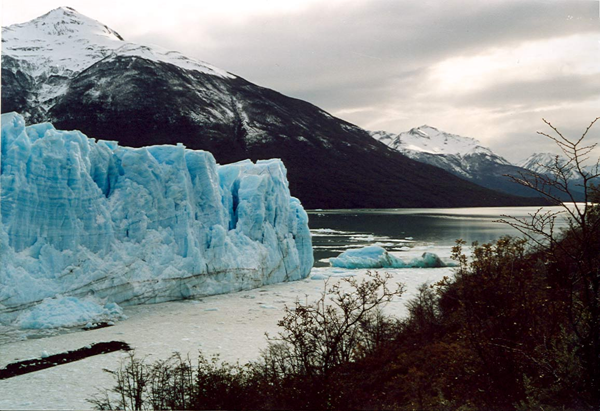

Chaltén y Calafate

2 noches en El Chaltén / 3 noches en El Calafate
Incluye:
Transfer
Hotel
Coordinador
El Chaltén es la Capital Argentina del Trekking. En este impactante escenario natural tienes múltiples y variadas opciones para caminar, escalar, realizar excursiones o paseos.
La tierra de los glaciares presenta, además del encanto y la majestuosidad de los bloques de hielo más hermosos e impactantes del mundo, una ciudad llena de vida y de sorpresas. Se trata de una localidad segura, limpia y verde, con numerosos atractivos naturales y con mucha historia patagónica.

 



Opcionales:
El Calafate
- Glaciar Perito Moreno (Opcional Safari Nautico)
- Minitrekking
- Navegaciones Rios de Hielo Express y Todo Glaciares
- Glaciares 360
- Balcones del Calafate
- Nativo Experience
El Chaltén
- Caminatas cortas, de medio dia y de dia completo
- Mirador Margarita, Chorrillo del Salto
- Mirador del Torre, Laguna Capri
- Laguna Torre, Laguna de los Tres
- Lago del Desierto